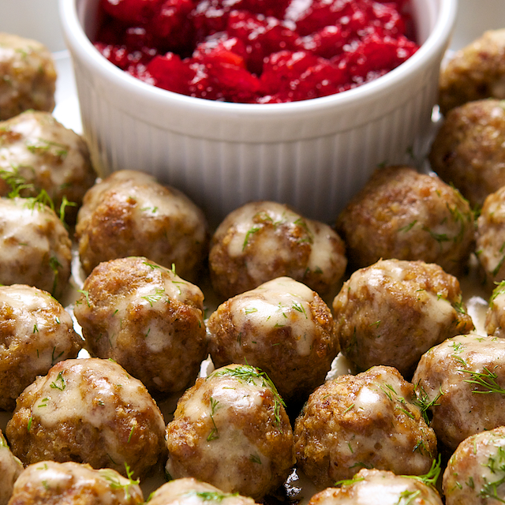

Description
This classic meatball recipe delivers juicy, flavorful bites packed with herbs and spices.
Perfect for pasta, subs, or as a hearty appetizer the whole family will love.
Ingridients
- 1 lb ground beef
- 1/2 cup breadcrumbs
- 1/4 cup grated Parmesan cheese
- 1/4 cup chopped fresh parsley
- 1 large egg
- 2 cloves garlic, minced
- 1 tsp salt
- 1/2 tsp black pepper
- 1/2 tsp dried oregano
- 1/4 cup milk
Steps
- Preheat your oven to 400°F (200°C).
- In a large bowl, combine ground beef, breadcrumbs, Parmesan cheese, parsley, egg, garlic, salt, pepper, oregano, and milk.
- Mix everything gently until just combined—avoid overmixing.
- Shape the mixture into meatballs, about 1 to 1.5 inches in diameter.
- Place the meatballs on a baking sheet lined with parchment paper.
- Bake for 15-20 minutes, or until cooked through and browned.
- Remove from oven and serve hot with your favorite sauce or pasta.